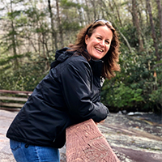

Introduction

- Personal Background: I am originally from Virginia and will always call it home, even though I have been in North Carolina for more than 20 years
now. I also took a detour to Texas for a few years and I miss that state. I have two kids, who are absolutely awesome! I love being outdoors, and am always up for
an adventure.
- Professional Background: I currently have three jobs, two of which are working for non-profits. The US one I am the HR rep, the executive
administrator, as well as anything else they throw my way. My non-profit job I am the CEO that helps people in India. (Ask me about it, I LOVE to talk about India.)
My third job is working as admin for a tree cutting company.
- Academic Background: Long and varied with a huge break in between the academic four walls. I attended college in NC, learned telecommunications
and worked in that for many years, before jumping into homeschooling (which means relearning everything for a second and third time), and I am now back to school to
learn more about my COVID interest.
- Primary Computer Platform: Windows 10
- Courses I'm Taking, and Why:
- CSC121 - Python - I enjoyed it so much last semester that I am basically taking the same class this semester.
- CTS240 - Project Management - I need to learn how to boss people around.
- WEB115 - Web Markup and Scripting - I am taking this because Professor von Briesen is teaching it! Contract
- WEB120 - Intro to Internet Multimedia - Required for the degree I want.
- WEB140 - Web Development Tools - Required for the degree I want.
- WEB210 - Web Design - I am taking this because Professor von Briesen is teaching it! Contract
- Something to Remember Me By: I believe that learning doesn't just happen in the classroom, but sometimes you need that too.